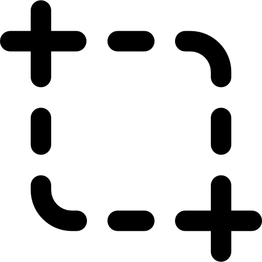
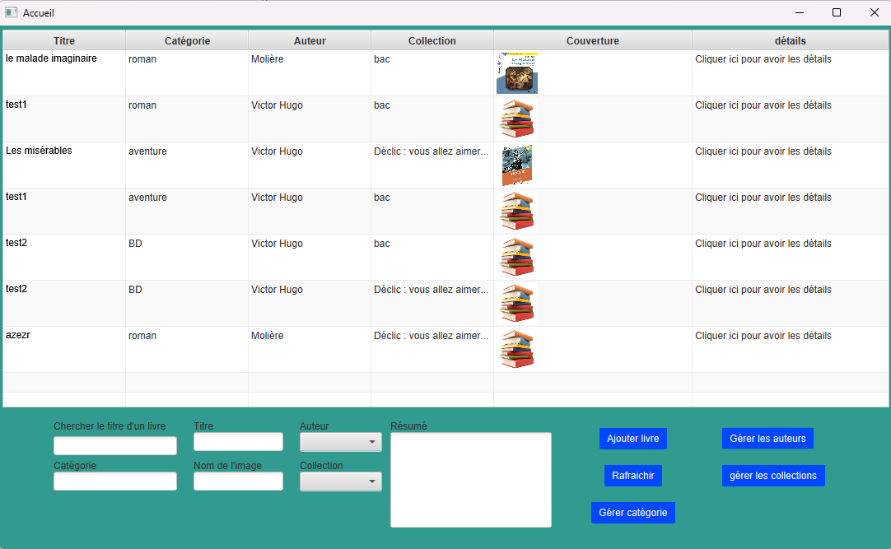
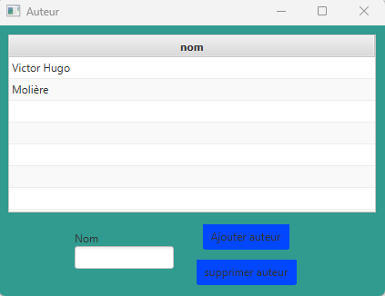
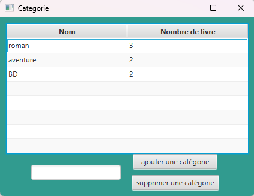
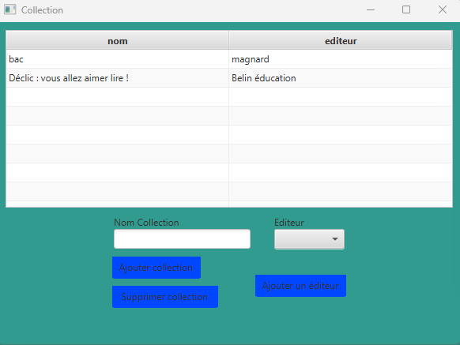
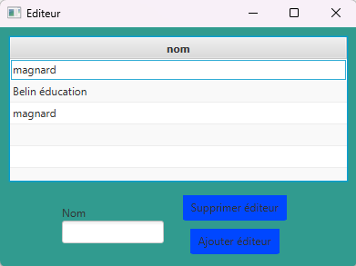

Captures — Application Client Lourd

Cette interface constitue l'écran d'accueil de l'application.
Elle propose un tableau complet listant tous les livres de la base de données, avec des colonnes pour le titre, catégorie, auteur, collection et couverture. Un lien permet d'accéder aux détails de chaque ouvrage.
En bas de la fenêtre, le bibliothécaire peut ajouter un nouveau livre en remplissant ses informations : nom, auteur, collection, résumé, etc. Il est également possible de chercher un livre ou rafraîchir l'affichage. Cette page centrale permet donc de gérer rapidement et efficacement l'ensemble des livres disponibles dans l'application.

Cette page permet la gestion complète des auteurs.
Le bibliothécaire peut y consulter toutes les entrées existantes dans un tableau clair, mais aussi en ajouter de nouveaux ou en supprimer au besoin. Cette fonctionnalité assure une gestion précise et rapide des différents auteurs associés aux ouvrages dans la bibliothèque.

Cette interface est dédiée à la gestion des catégories de livres.
Le tableau affiche le nom de chaque catégorie ainsi que le nombre de livres associés. Le bibliothécaire peut ajouter une nouvelle catégorie pour organiser la base ou supprimer une catégorie existante. Cette section permet de structurer efficacement les types d'ouvrages disponibles.

L'écran des collections permet de gérer les différentes collections littéraires de l'application.
Chaque collection peut être ajoutée ou supprimée selon les besoins. Un lien permet aussi d'accéder à la gestion des éditeurs. Cette fonctionnalité facilite l'organisation des livres par collection et leur rattachement à un éditeur spécifique.

Cette section est consacrée à la gestion des éditeurs.
Tout comme les autres entités, on peut ici ajouter un nouvel éditeur ou en supprimer un existant. Cette étape est importante pour bien associer chaque collection ou ouvrage à sa maison d'édition.